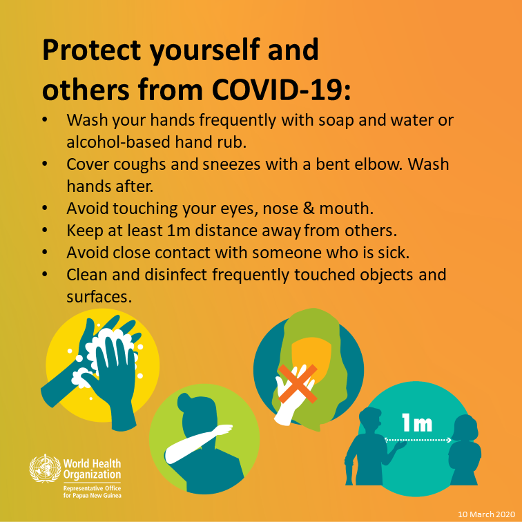
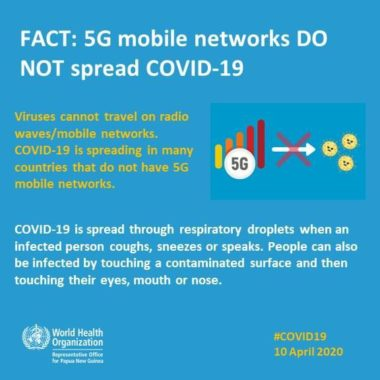

<html>
<head>
<meta http-equiv="Content-Type" content="text/html; charset=utf-8" />
<tittle></tittle>
<link href="home.css"  rel="stylesheet"  type="text/css" />

<link href="https://fonts.goggleapis.com/css?family=play"  rel="stylesheet" >
</head>

<body>
<div class="home">
<form>
<h1><center><style="color: white"> WE WELCOME YOU TO THE AWARNESS OF THE COVID-19</h1></center>
<p><h2><b><i>Coronavirus disease 2019 (COVID-19) is an infectious disease caused by severe acute respiratory syndrome coronavirus 2 (SARS-CoV-2).
 The disease was first identified in December 2019 in Wuhan, the capital of China's Hubei province, and has since spread globally, resulting in the ongoing 2019–20 coronavirus pandemic. Common symptoms include fever, cough and shortness of breath.<br>
 Other symptoms may include fatigue, muscle pain, diarrhoea, sore throat, loss of smell and abdominal pain.
 The time from exposure to onset of symptoms is typically around five days, but may range from two to fourteen days.<br>
 While the majority of cases result in mild symptoms, some progress to viral pneumonia and multi-organ failure.
 As of 11 April 2020, more than 1.71 million cases have been reported in more than 200 countries and territories,resulting in more than 103,000 deaths.
 More than 389,000 people have recovered.<br>

The virus is mainly spread between people during close contact,<br>
[a] often via small droplets produced during coughing,<br>
[b] sneezing, or talking.<br>
 While these droplets are produced when breathing out, they usually fall to the ground or surfaces rather than being infectious over large distances. <br>
 People may also become infected by touching a contaminated surface and then their face. The virus can survive on surfaces for up to 72 hours.<br>
 Coronavirus is most contagious during the first three days after onset of symptoms, although spread may be possible before symptoms appear and in later stages of the disease.<br>
The standard method of diagnosis is by real-time reverse transcription polymerase chain reaction (rRT-PCR) from a nasopharyngeal swab.<br>
 Chest CT imaging may also be helpful for diagnosis in individuals were there is a high suspicion of infection based on symptoms and risk factors but is not recommended for routine screening.<br>
Recommended measures to prevent infection include frequent hand washing, maintaining physical distance from others (especially from those with symptoms), covering coughs and sneezes with a tissue or inner elbow and keeping unwashed hands away from the face. 
<br>The use of masks is recommended for those who suspect they have the virus and their caregivers.
<br> Recommendations for mask use by the general public vary, with some authorities recommending against their use, some recommending their use and others requiring their use.<br>
Currently, there is no vaccine or specific antiviral treatment for COVID-19.
 Management involves treatment of symptoms, supportive care, isolation and experimental measures.<br>
The World Health Organization (WHO) declared the 2019–20 coronavirus outbreak a Public Health Emergency of International Concern (PHEIC).
 on 30 January 2020 and a pandemic on 11 March 2020.
 Local transmission of the disease has been recorded in many countries across all six WHO regions.</i></b></h2></p>

  <div>
 
 </div>
<div>
 
 </div>
<a href="link.html" style="text-decoration: none">NEXT</a>
<br><br>
  </form>
  
  </div>
  </body>
</html>